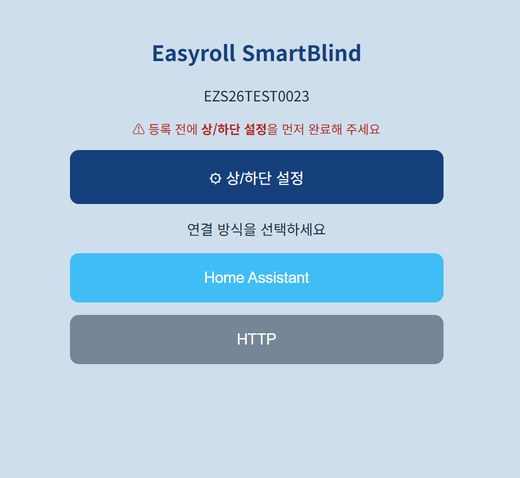
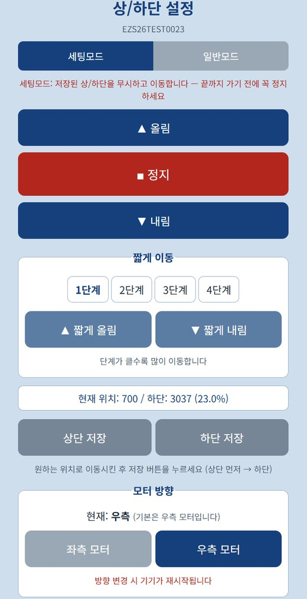
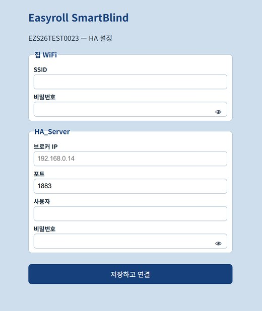

2. 기기 연결하기
브라우저만으로 연결합니다 — 별도 앱이 필요 없습니다. 상황에 맞는 방법 하나를 따라 하세요.
방법 A — 새 기기 (또는 초기화한 기기) ★가장 쉬움
- 블라인드 전원 ON (살짝 움직였다 돌아오면 준비 완료)
- 폰/PC의 WiFi 설정에서 블라인드 이름(EZS...)에 연결
- 비밀번호는
u67184+ 기기 이름(ID)의 마지막 3자리입니다. 예) 기기 이름이EZS...123이면 → 비밀번호는u67184123
- 비밀번호는
- 브라우저 주소창에
192.168.4.1입력 (구글 크롬 브라우저를 권장합니다)
아래와 같은 설정 화면이 나타납니다. 화면 안내대로 상/하단 설정을 먼저 완료한 뒤 연결 방식을 선택하세요.

4단계 ⚙ 상/하단 설정 — 가장 먼저 하세요
HA 위치 슬라이더(%)가 정확히 동작하려면 블라인드의 "맨 위/맨 아래"를 먼저 알려줘야 합니다. 첫 화면에서 [⚙ 상/하단 설정] 을 누르세요.
이미 상/하단이 설정된 모터라면 건너뛰어도 됩니다
이지롤 앱에서 이미 상/하단 설정을 완료한 기기는 그 값이 모터에 저장되어 있어, 다시 설정할 필요가 없습니다. 바로 5단계 HA 연결 정보 입력으로 넘어가세요.

- 세팅모드에서 ▲올림 / ▼내림으로 원하는 맨 위 위치로 이동 → [상단 저장]
- ⚠️ 세팅모드는 저장된 한계를 무시하고 움직입니다. 끝까지 가기 전에 ■정지를 꼭 누르세요.
- 같은 방법으로 맨 아래 위치로 이동 → [하단 저장] (상단 먼저 → 하단 순서)
- 일반모드로 바꿔 ▲/▼를 눌러 저장된 위치에서 잘 멈추는지 확인합니다.
- 짧게 이동(1~4단계) 으로 미세 조정할 수 있습니다. (단계가 클수록 많이 이동)
- 동작 방향이 반대라면 모터 방향에서 좌측/우측을 바꿉니다. (기본 우측, 변경 시 기기 재시작)
💡 화면의 현재 위치 / 하단 (%) 표시로 지금 어디에 있는지 확인할 수 있습니다. 💡 등록을 마친 뒤에도
http://<블라인드IP>:20318/limitsetup으로 언제든 다시 설정할 수 있습니다.
5단계 HA 연결 정보 입력
상/하단 설정을 마쳤으면 처음 화면으로 돌아와 [Home Assistant] 를 누릅니다.

| 구분 | 입력 항목 |
|---|---|
| 집 WiFi | SSID(WiFi 이름) · 비밀번호 |
| HA_Server | 브로커 IP · 포트(1883) · 사용자 · 비밀번호 ← 1번 문서에서 메모한 값 |
💡 비밀번호 칸의 👁 아이콘을 누르면 입력한 값을 확인할 수 있습니다.
[저장하고 연결] 을 누르면 기기가 재시작하며 집 WiFi + HA에 자동 연결됩니다.
저장 직후 화면이 멈추거나 '연결 안 됨'으로 보이는 것은 정상입니다
저장하면 블라인드가 자기 WiFi(EZS...)를 끄고 집 WiFi로 옮겨갑니다. 폰/PC와 기기의 연결이 자동으로 끊어지기 때문에, 브라우저에는 페이지가 열리지 않거나 오류처럼 보일 수 있습니다. 고장이 아닙니다.
- 폰/PC의 WiFi를 원래 쓰던 집 WiFi로 다시 연결해 주세요.
- 잠시(약 1분) 기다린 뒤 아래 연결 확인으로 HA에 등록됐는지 보시면 됩니다.
연결되면 HA에 블라인드가 자동으로 등록됩니다. 따로 추가 버튼을 누를 필요 없습니다.
방법 B — 이미 이지롤 앱에 연결되어 사용 중인 기기
기기를 초기화하지 않고 HA로 전환하는 방법입니다.
- 블라인드의 IP 확인 — 이지롤 앱의 기기 정보에서 확인할 수 있습니다.
- 브라우저에서
http://<블라인드IP>:20318/hasetup접속 (구글 크롬 브라우저를 권장합니다) - HA 브로커 정보 입력 → [HA_Server로 전환·저장]
- 재시작 후 HA에 자동 등록
이지롤 앱으로 되돌리기
HA 연결을 해제하고 다시 이지롤 앱으로 쓰고 싶을 때는 아래 둘 중 하나를 누르면 됩니다.
| 위치 | 버튼 |
|---|---|
.../20318/hasetup (같은 페이지) |
[Easyroll_Server로 복원] |
.../20318/limitsetup 페이지 하단 |
[Easyroll 모드로 전환] |
전환 후 기기 상태
- 이지롤 앱에 등록되어 있던 기기 — 수 초 후 앱에서 바로 동작합니다.
- 앱에 등록된 적 없는 기기 — 수 분 후 LED가 "3번 깜빡 → 2초 멈춤" 을 반복합니다. (등록 대기 상태)
- 이지롤 앱에서 기기 등록을 하면 사용할 수 있습니다.
연결 확인
- HA 화면: 설정 → 기기 및 서비스 → MQTT → 기기 목록에 블라인드(EZS...)가 보이면 성공
- 기기 카드에서 ▲/▼/■ 버튼으로 동작 테스트
대시보드에 추가하기
연결만 하면 기기는 등록되지만, 대시보드(첫 화면)에 보이게 하려면 한 가지만 더 하면 됩니다. 방법은 두 가지입니다 — ①영역 지정이 가장 간단하고, 원하는 위치에 직접 놓고 싶으면 ②카드 추가를 쓰세요.
① 기기를 "거실"에 배치하기 (추천)
기기를 영역(방)에 넣어두면 HA 기본 대시보드가 자동으로 방별로 정리해 줍니다.
- 설정 → 기기 및 서비스 → 상단 [기기] 탭
- 목록에서 블라인드(
EZS...)를 선택합니다. - 기기 정보 카드의 ⚙(톱니) 또는 [설정] 을 누릅니다.
- 영역에서 거실을 선택하고 [업데이트] 합니다.
- 원하는 방이 없으면 입력창에 이름을 적어 새로 만들 수 있습니다.
- 대시보드로 돌아가면 거실 항목 안에 블라인드가 나타납니다.
💡 기기 이름도 여기서 바꿀 수 있습니다. (예:
EZS...→ 거실 블라인드) 음성 명령이나 자동화에서 부르기 쉬운 이름을 권합니다.
② 대시보드에 카드로 직접 추가하기
원하는 대시보드의 원하는 자리에 놓고 싶을 때 사용합니다.
- 대시보드 화면에서 우측 상단 ✏️(연필) 을 눌러 편집 모드로 들어갑니다.
- [＋ 카드 추가] 를 누릅니다.
- 카드 종류에서 타일(Tile) 또는 엔티티(Entities) 를 고릅니다.
- 엔티티 칸에
cover.를 입력해 블라인드를 선택합니다. (예:cover.ezs16a4106036) - [저장] → 편집 모드를 종료하면 카드가 대시보드에 배치됩니다.
💡 타일 카드는 열기/닫기/정지 버튼이 한 줄로 나와 가장 쓰기 편합니다. 💡 여러 대를 한 카드에 담고 싶으면 엔티티 카드에 블라인드를 여러 개 추가하세요.
알아두기
- 이지롤 앱과 HA는 동시에 사용할 수 없습니다. HA에 연결하면 이지롤 앱 제어는 중단됩니다. (리모컨·버튼은 어느 쪽이든 항상 동작)
- 기기를 공장 초기화(버튼 5초)하면 HA 설정이 지워지고 기본(이지롤 앱) 상태로 돌아갑니다.
- 한 번 HA 정보를 저장해 두면, 이후 서버 전환은 명령 한 번으로 가능 → 4. 고급 명령어